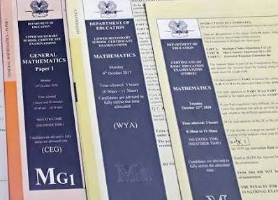

Gr.10 Maths Old Exam Papers (2007 - 2023)
-

2021 | Download Exam Paper
The 2021 PNG Grade 10 National Mathematics Examination was structured as a comprehensive, three-hour paper consisting of 25 multiple-choice questions worth 1 mark each, 20 short-answer questions worth 1 mark each, and 1 extended response question worth 5 marks, bringing the total possible score to 50 marks.
Exam Marks: x / 50 -
2020 | Download Exam Paper
The 2020 PNG Grade 10 National Mathematics Examination was structured as a comprehensive, three-hour paper consisting of 25 multiple-choice questions worth 1 mark each, 20 short-answer questions worth 1 mark each, and 1 extended response question worth 5 marks, bringing the total possible score to 50 marks.
Exam Marks: x / 50 -
2019 | Download Exam Paper
The 2019 PNG Grade 10 National Mathematics Examination was structured as a comprehensive, three-hour paper consisting of 25 multiple-choice questions worth 1 mark each, 20 short-answer questions worth 1 mark each, and 1 extended response question worth 5 marks, bringing the total possible score to 50 marks.
Exam Marks: x / 50 -
2018 | Download Exam Paper
The 2018 PNG Grade 10 National Mathematics Examination was structured as a comprehensive, three-hour paper consisting of 25 multiple-choice questions worth 1 mark each, 20 short-answer questions worth 1 mark each, and 1 extended response question worth 5 marks, bringing the total possible score to 50 marks.
Exam Marks: x / 50 -

2017 | Download Exam Paper
The 2017 PNG Grade 10 National Mathematics Examination was structured as a comprehensive, three-hour paper consisting of 25 multiple-choice questions worth 1 mark each, 20 short-answer questions worth 1 mark each, and 1 extended response question worth 5 marks, bringing the total possible score to 50 marks.
Exam Marks: x / 50 -

2016 | Download Exam Paper
The 2016 PNG Grade 10 National Mathematics Examination was structured as a comprehensive, three-hour paper consisting of 25 multiple-choice questions worth 1 mark each, 20 short-answer questions worth 1 mark each, and 1 extended response question worth 5 marks, bringing the total possible score to 50 marks.
Exam Marks: x / 50 -
2015 | Download Exam Paper
The 2015 PNG Grade 10 National Mathematics Examination was structured as a comprehensive, three-hour paper consisting of 25 multiple-choice questions worth 1 mark each, 20 short-answer questions worth 1 mark each, and 1 extended response question worth 5 marks, bringing the total possible score to 50 marks.
Exam Marks: x / 50 -
2012 | Download Exam Paper
The 2012 PNG Grade 10 National Mathematics Examination was structured as a comprehensive, three-hour paper consisting of 25 multiple-choice questions worth 1 mark each, 20 short-answer questions worth 1 mark each, and 1 extended response question worth 5 marks, bringing the total possible score to 50 marks.
Exam Marks: x / 50 -
2011 | Download Exam Paper
The 2011 PNG Grade 10 National Mathematics Examination was structured as a comprehensive, three-hour paper consisting of 25 multiple-choice questions worth 1 mark each, 20 short-answer questions worth 1 mark each, and 1 extended response question worth 5 marks, bringing the total possible score to 50 marks.
Exam Marks: x / 50 -
2010 | Download Exam Paper
The 2010 PNG Grade 10 National Mathematics Examination was structured as a comprehensive, three-hour paper consisting of 25 multiple-choice questions worth 1 mark each, 20 short-answer questions worth 1 mark each, and 1 extended response question worth 5 marks, bringing the total possible score to 50 marks.
Exam Marks: x / 50